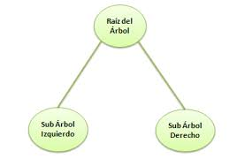
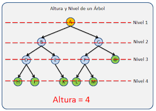
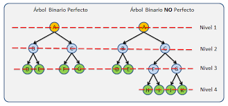

En estructuras de datos, un árbol es una jerarquía de nodos conectados, donde cada nodo tiene un valor y puede
tener varios nodos hijos, excepto el nodo superior llamado raíz, que no tiene un nodo padre. Los nodos sin hijos
se llaman hojas. Los árboles son utilizados para organizar y representar datos de manera jerárquica, siendo
comunes en algoritmos de búsqueda, organización y almacenamiento eficiente de información.
Componentes de un árbol
Un nodo es la unidad básica de un árbol y contiene información o datos. Cada nodo
puede tener cero o más nodos hijos.
El nodo superior del árbol se llama raíz. Es el punto de partida para acceder a
cualquier nodo en el árbol.

Un nodo que tiene al menos un nodo hijo se llama padre. Cada nodo, excepto la
raíz, tiene exactamente un padre.
Un nodo conectado directamente a otro nodo en un nivel inferior se llama hijo. Cada
nodo puede tener cero o más hijos.
Nodos que comparten el mismo padre se llaman hermanos.
Un conjunto de nodos y sus descendientes se llama subárbol. Puede considerarse como
un árbol completo en sí mismo.
La altura de un nodo es la longitud del camino más largo desde ese nodo hasta una
hoja. La altura del árbol es la altura de la raíz.

Si hay un camino desde el nodo A hasta el nodo B, entonces A es un ancestro de B,
y B es un descendiente de A.
Tipos de Árboles
Árbol Binario
Cada nodo tiene como máximo dos hijos, un hijo izquierdo y un hijo derecho.

Árbol Binario de Búsqueda (BST)
Un tipo especial de árbol binario en el que el hijo izquierdo de un nodo tiene un valor menor que el nodo
y el hijo derecho tiene un valor mayor.
Árbol AVL
Un árbol binario de búsqueda balanceado en altura, donde la diferencia de altura entre los subárboles
izquierdo y derecho de cada nodo (conocida como factor de equilibrio) está limitada a -1, 0 o 1.
Árbol B
Un árbol balanceado que permite un mayor número de claves por nodo que un árbol AVL. Se utiliza
comúnmente en sistemas de bases de datos y sistemas de archivos.
Árbol B+
Similar al árbol B, pero con nodos hoja adicionales que actúan como un nivel adicional de punteros para
facilitar las búsquedas secuenciales.
Árbol Trie (o Prefijo)
Utilizado para realizar consultas eficientes en intervalos de datos. Cada nodo representa un segmento del
conjunto total de datos y almacena información resumida sobre ese segmento.
Árbol de Segmentos
Estructura de árbol especializada para almacenar una colección de cadenas, donde cada nodo representa un
carácter y los caminos desde la raíz hasta los nodos hoja forman palabras.
Árbol N-ario
Un árbol donde cada nodo puede tener más de dos hijos.
Ejemplos de arboles en Python
En Python, cuando se habla de "árboles", generalmente se refiere a la implementación de estructuras de datos en
forma de árboles, como árboles binarios, árboles de búsqueda binaria (BST), árboles AVL, etc. La implementación
de árboles en Python a menudo se realiza utilizando clases y punteros.
A continuación, un ejemplo simple de una implementación del sistema de archivos de linux y del organigrama del
ITPA en Python.